Berita & Artikel
Informasi dan kegiatan terkini dari Diskominfo
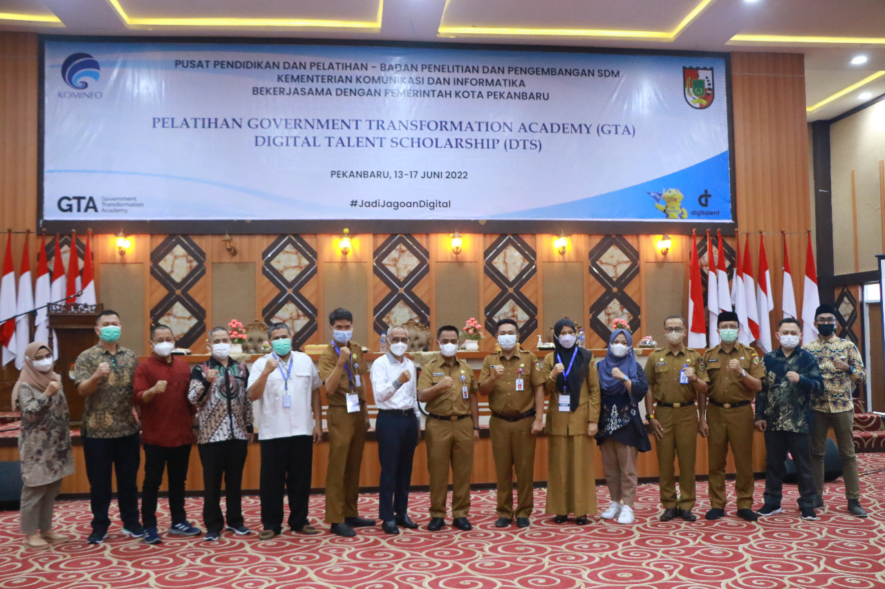
15 Agustus 2025
Pemko Pekanbaru Kolaborasi Bersama BBPSDMP Kominfo Medan Gelar Pelatihan GTA 2025
Pemerintah Kota (Pemko) Pekanbaru berkolaborasi bersama Balai Besar Pengembangan Sumber Daya Manusia...
Baca Selengkapnya →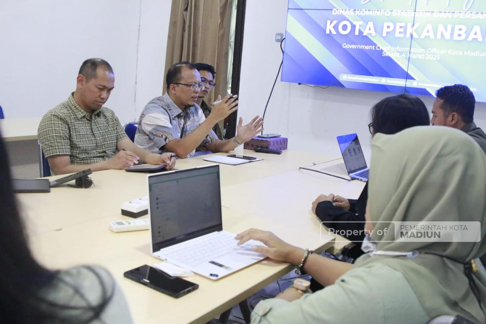
04 Maret 2025
Penataan Aplikasi Diskominfo Kota Madiun Dinilai Baik, Pemkot Pekanbaru Datang Untuk Studi Tiru
Dengan komitmen kuat untuk mendukung terwujudnya Smart City di Kota Madiun, Diskominfo telah menghadirkan...
Baca Selengkapnya →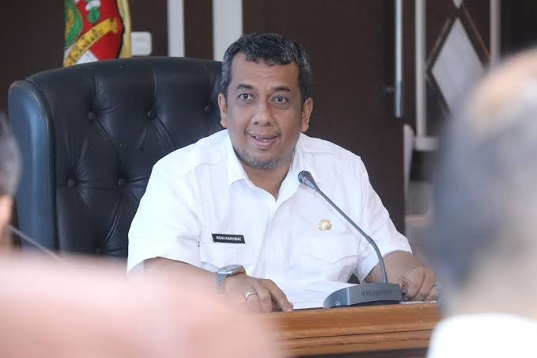
10 Januari 2025
Maisisco Ditunjuk Sebagai Plh Kadis Kominfo Pekanbaru
Pj Wali Kota Pekanbaru, Roni Rakhmat, resmi menunjuk H. Maisisco, S.Sos, M.Si, sebagai Pelaksana Harian (Plh) Kepala Dinas...
Baca Selengkapnya →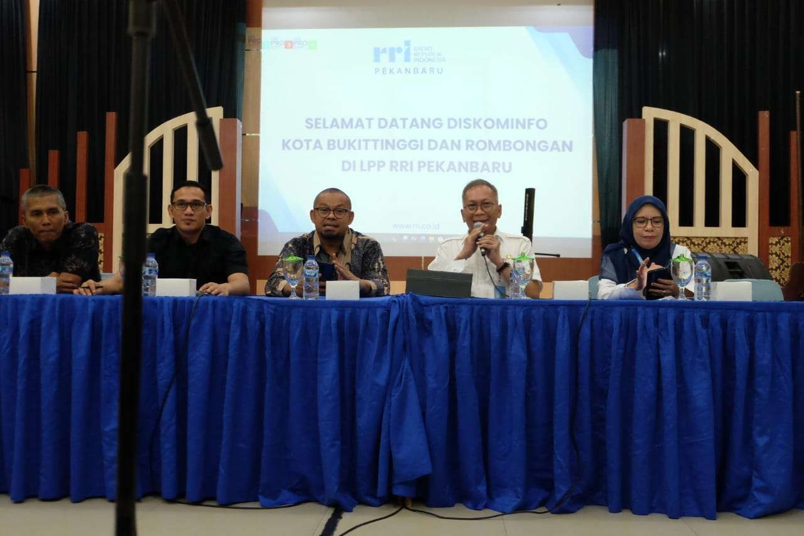
23 Dec 2024
Dinas Kominfo bersama Wartawan Bukittinggi Kunjungi RRI Pekanbaru
Sebanyak 62 Wartawan bersama Dinas Kominfo Kota Bukittinggi mengikuti Study...
Baca Selengkapnya →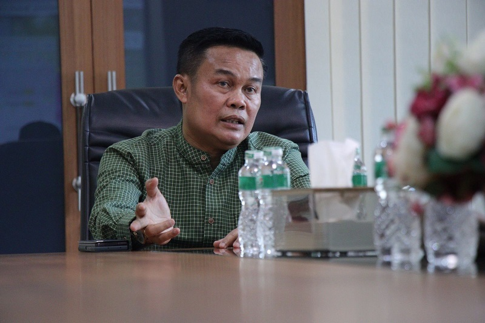
10 Januari 2025
H. Maisisco Ditunjuk jadi Plh. Kepala Dinas Kominfotiksan Pekanbaru
Penjabat (Pj) Wali Kota Pekanbaru, Roni Rakhmat menunjuk H. Maisisco, S.Sos, M.Si, sebagai...
Baca Selengkapnya →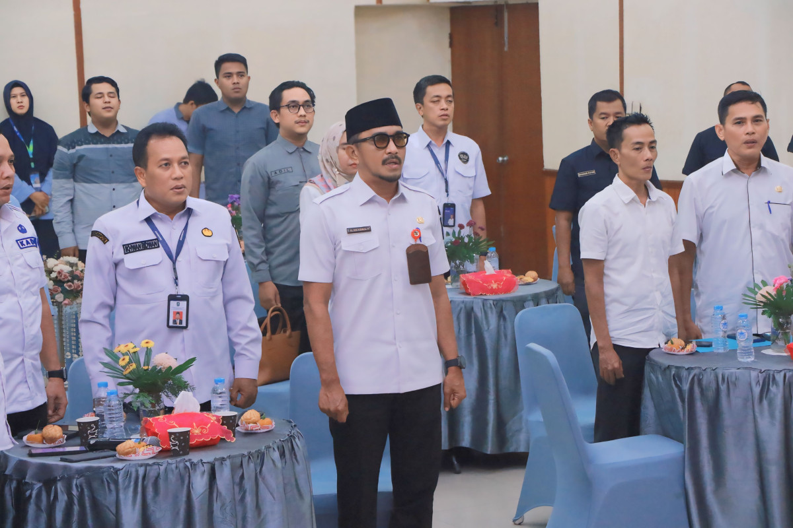
23 Oktober 2024
Perkuat Sinergitas, Pemko Pekanbaru dan LPP RRI Teken Perjanjian Kerja Sama
Pj Wali Kota Pekanbaru Risnandar Mahiwa yang diwakili Kepala Dinas Komunikasi, Informatika, Statistik dan Persandian...
Baca Selengkapnya →10 Januari 2025
Tunjuk Maisisco Jadi Plh Kadis Kominfo Pekanbaru Gantikan Raja Hendra, Ini Pesan Pj Wako
Pj Walikota Pekanbaru, Roni Rakhmat, resmi menunjuk Maisisco...
Baca Selengkapnya →21 Agustus 2025
Pemko Pekanbaru Segera Luncurkan Aplikasi AMAN untuk Permudah Layanan Publik
Pemerintah Kota (Pemko) Pekanbaru menargetkan peluncuran aplikasi AMAN dalam waktu satu...
Baca Selengkapnya →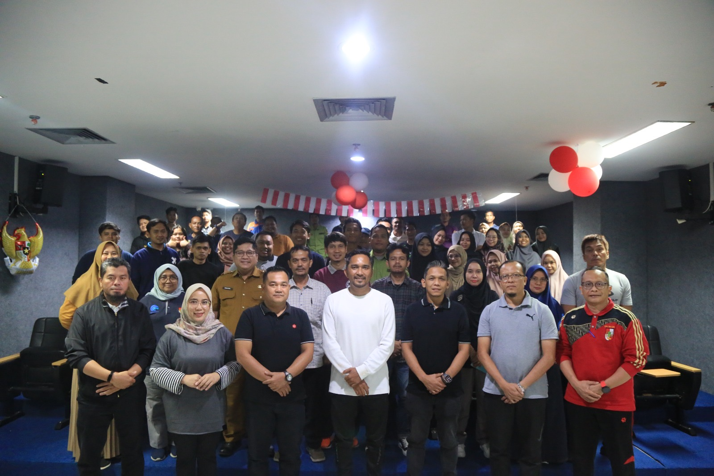
10 September 2024
Gelar Serah Terima Jabatan, Diskominfotiksan Pekanbaru Menuju Peningkatan Kinerja
Dinas Komunikasi Informatika Statistik dan Persandian (Diskominfotiksan) Kota Pekanbaru menggelar serah terima...
Baca Selengkapnya →07 Maret 2025
Gantikan Maisisco , Firman Hadi Jabat Plt Kepala Diskominfo Pekanbaru
Jabatan Plt Kepala Dinas Komunikasi Informasi Statistik dan Persandian (Diskominfotiksan) Kota Pekanbaru dijabat...
Baca Selengkapnya →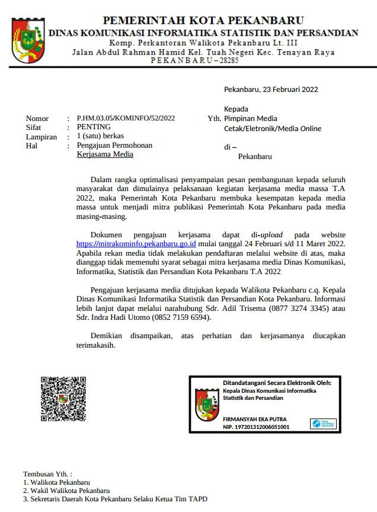
23 Februari 2022
Kominfo Pekanbaru Buka Pendaftaran Kerjasama Media Secara Online
Dalam rangka optimalisasi penyampaian pesan pembangunan kepada seluruh masyarakat dan dimulainya...
Baca Selengkapnya →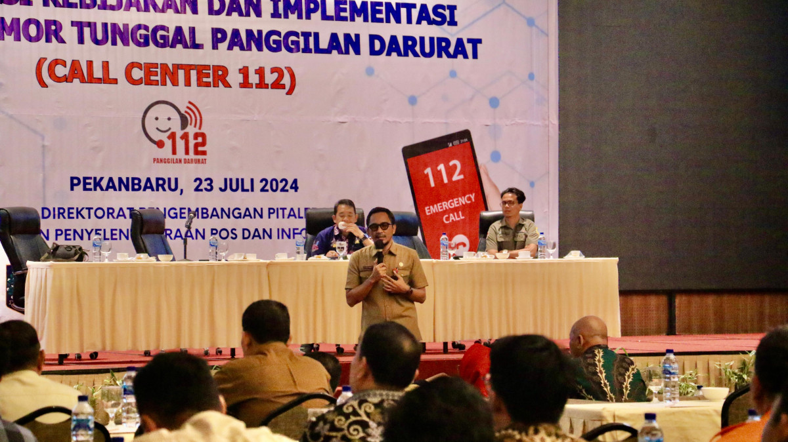
23 Juli 2024
Sosialisasi Kemkominfo RI, Kepala Diskominfotiksan Paparkan Realisasi Call Center 112 di Pekanbaru
Kepala Dinas Komunikasi, Informasi, Statistik dan Persandian (Diskominfotiksan) Kota Pekanbaru, Raja Hendra Saputra menghadiri...
Baca Selengkapnya →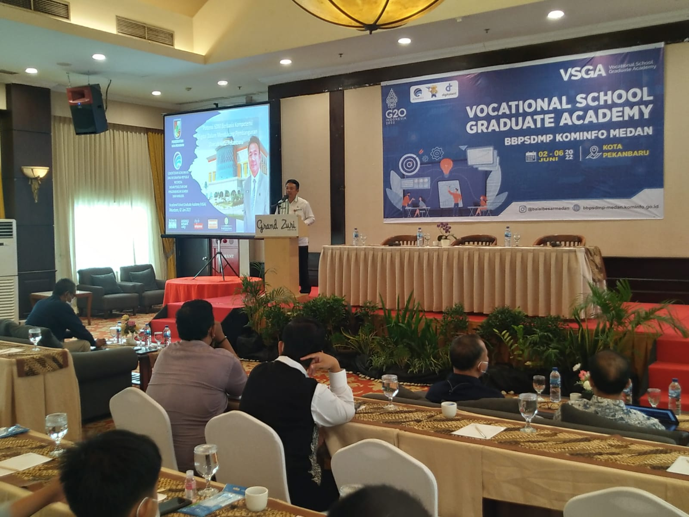
03 Juni 2022
Kominfo Gelar VSGA di Pekanbaru, Firmansyah Eka Putra: Tingkatkan dan Kembangkan Potensi Siswa Menuju Dunia Kerja
BPSDMP Kominfo Regional Medan menggelar Vocational School Graduate Academy (VSGA) di Kota Pekanbaru selama 5 hari...
Baca Selengkapnya →08 Februari 2019
Kominfo Gesa Pemasangan Jaringan Internet di Kantor Baru Walikota di Tenayan Raya
Dinas Komunikasi Informatika Statistik dan Persandian Kota Pekanbaru saat ini menggesa pemasangan jaringan...
Baca Selengkapnya →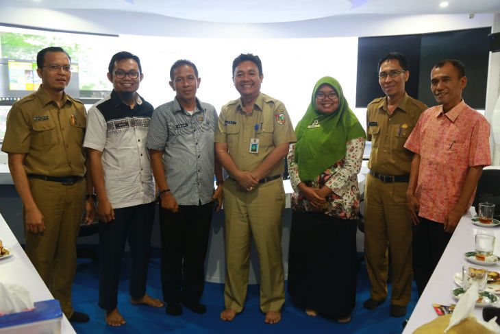
20 Februari 2018
Kadis Kominfo Payakumbuh Terkesan Dengan Aplikasi EKA
Kepala Dinas (Kadis) Komunikasi Informatika, Statistik dan Persandian Kota Pekanbaru Firmansyah Eka Putra, ST, MT menerima kujungan...
Baca Selengkapnya →